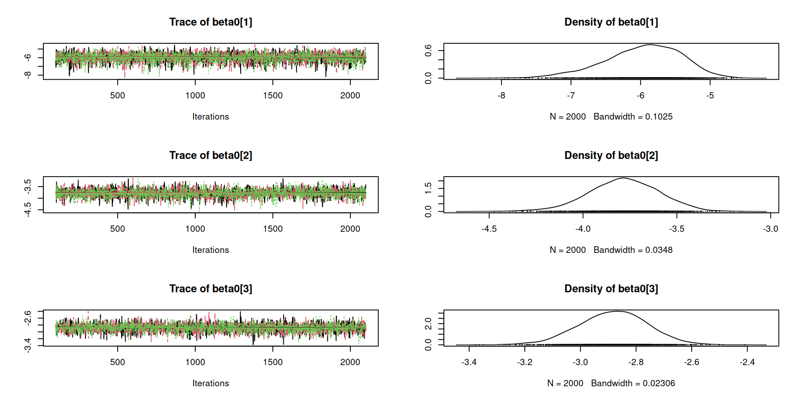
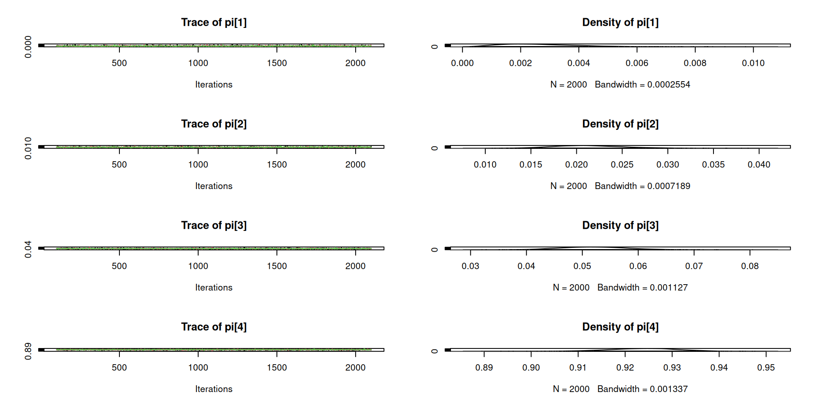

Typically, we don’t observer survival time for all individuals because some are still alive at the end of the observation period, either because transmitter batteries die or we stop monitoring.
These survival times are “right censored”, which means that we know they occurred after the observation window, but we don’t know their exact value.
There are several types of censoring: - Right censoring (common): survival time is in the interval \((U,\infty]\) - Left censoring (rare): survival time is in the interval \([-\infty,L)\) - Interval censoring (rare): survival time is in \((a,b]\).
Survival
There are 4 quantities that you must understand:
Hazard \(\lambda(t)\)
The instantaneous mortality risk
Cummulative hazard \(\Lambda(t)\)
The cummulative mortality risk
Survivorship \(S(t)\)
The probability of surviving until time \(t\)
Probability density \(p(t)\)
The relative probability of dying at time \(t\)
Continuous-time models
Hazard
The continuous-time definition of the hazard rate is the instantaneous mortality risk, conditional on surviving to time \(t\): \[
\lambda(t) = \lim_{\Delta_t \to 0} \Pr(t \le T < t+\Delta_t | T\ge t)/\Delta_t
\]
The cumulative hazard can be thought of as the sum of the risks up to time \(t\): \[
\Lambda(t) = \int_{0}^t \lambda(j) \,\mathrm{d}j
\]
Survivorship and probability density
Survivorship is the probability of surviving to time \(t\) or longer: \[
% S(t) = \Pr(T \ge t) = \exp\left(-\int_{0}^t \lambda(j) \,dj\right)
S(t) = \Pr(T \ge t) = \exp(-\Lambda(t))
\]
The probability density is given by the probability of surviving to, and then dying at, time \(t\)\[
p(t) = S(t)\lambda(t) %\exp\left(-\int_{0}^t \lambda(j) \,dj\right)
\]
Exponential survival times
The simplest survival model is the “exponential model”, which assumes that the hazard is constant over time: \(\lambda = \lambda(t)\).
where - \(a_j\) is the time interval - \(d_j\) is the number of mortalities in time interval \(j\) - \(r_j\) is the number of individuals “at risk” at the beginning of interval \(j\)
Call:
survreg(formula = y ~ x, dist = "exponential")
Value Std. Error z p
(Intercept) 4.8642 0.0732 66.46 < 2e-16
x 0.4731 0.0725 6.53 6.6e-11
Scale fixed at 1
Exponential distribution
Loglik(model)= -1110.7 Loglik(intercept only)= -1132.7
Chisq= 43.95 on 1 degrees of freedom, p= 3.4e-11
Number of Newton-Raphson Iterations: 4
n= 200
The Cox proportional hazards model is of the form: \[
\lambda_i(t) = \lambda_0(t)\exp(\beta_1 x_{i,1} + \beta_2 x_{i,2} + \cdots)
\] where \(\lambda_0(t)\) is the baseline hazard rate, similar to a Kaplan-Meier hazard.
(cox1 <-coxph(y ~ x))
Call:
coxph(formula = y ~ x)
coef exp(coef) se(coef) z p
x -0.45875 0.63207 0.07584 -6.049 1.46e-09
Likelihood ratio test=37.81 on 1 df, p=7.801e-10
n= 200, number of events= 192
A simple way of modeling survival is to discretize time and use the following model: \[
z_{i,t} \sim \mathrm{Bern}(z_{i,t-1}\times \phi_t)
\]
where \(z_{i,t}\) indicates if individual \(i\) is alive at time \(t\) and \(\phi\) is the probability of surviving the time interval.
In discrete time we have: - Hazard: \(\lambda_t = 1-\phi_t = \Pr(t \le T < t+1 | T\ge t)\) - Survivorship: \(S_t = \prod_{j=1}^t \phi_j\) - Probability density: \(p(t) = S_t \lambda_t\)
Simulating discrete-time survival data
Parameters and dimensions
maxTime <-10## Time periodn <-25## nIndividualsphi <-0.7## Survival probability over 1 time step
Generate \(z\), the alive-dead indicator
z <-matrix(NA, n, maxTime)first <-rpois(n, 1)+1## random release datesfor(i in1:n) { z[i,first[i]] <-1## Known alive at releasefor(t in (first[i]+1):maxTime) { z[i,t] <-rbinom(1, 1, z[i,t-1]*phi) ## Alive/dead state }}
Competing risks models are used when there are multiple ways of dying, and we’re interested in the cause-specific mortality risk, represented by \(K\) hazard functions: \[
\lambda_{k,t} = \exp(\beta_{0,k} + \beta_{1,k}x_{t} + \cdots)
\]
We can model the conditional probability of dying during interval \(t\), with a multinomial link function: \[
\pi_{k,t} = \frac{\lambda_{k,t}}{1+\sum_{j=1}^K \lambda_{j,t}}
\] where the final multinomial cell probability is the probability of surviving: \(\pi_{K+1,t} = 1-\sum_{k=1}^K \pi_{k,t}\).
The data can be modeled with a categorical distribution: \[
z_{i,t} \sim \mathrm{Cat}({\bm \pi}_t | \mathrm{alive\; at\;} t-1)
\]
Competing risks
Suppose you can die in 3 ways: killed by cougar, bear, or wolf
beta0 <-c(-6, -4, -3) ## log-hazard. No covariateslambda <-exp(beta0) ## Cause-specific hazardpi <- lambda / (1+sum(lambda))pi[4] <-1-sum(pi) ## Probability of surviving t to t+1
Set-up the data as a multi-state indicator
nDeer <-100nDays <-100z <-matrix(NA, nDeer, nDays)z[,1] <-4## Everyone starts in state 4 (alive)
Competing risks
There are simpler ways of modeling temporal state dynamics, but we will use a general multi-state transition matrix \(\Phi\):
model{
## z states could be (for example):
## 1=killed by cougar
## 2=killed by bear
## 3=killed by wolf
## 4=alive
for(k in 1:nRisks) {
beta0[k] ~ dnorm(0, 0.1) ## Intercept only model
lambda[k] <- exp(beta0[k]) ## Cause-specific hazard
pi[k] <- lambda[k]/(1+Lambda) ## Pr(killed by cause k)
}
Lambda <- sum(lambda) ## Total risk
pi[nRisks+1] <- 1-sum(pi[1:nRisks]) ## Pr(not killed)
Phi[nRisks+1,] <- pi
for(i in 1:n) {
for(t in (first[i]+1):maxTime) {
z[i,t] ~ dcat(Phi[z[i,t-1],1:4])
}
}
}
Processing function input.......
Done.
Beginning parallel processing using 3 cores. Console output will be suppressed.
Parallel processing completed.
MCMC took 0.047 minutes.
MCMC output

MCMC output

Assumptions of failure time models
Random sampling - Very hard to do in practice
Independent survival times - Problematic for gregarious species
Mortality times are known exactly - Also hard
Censoring is random and independent of survival - This will be a problem if transmitters fail when animals die, and you don’t know if they died.
Well-defined time origin - Animals don’t have to be released at the same time
Looking ahead
Most “open population” mark-recapture models use discrete-time survival models, with observation error coming from imperfect detection.
Statisticians call these hidden Markov models.
Next time, we’ll focus on one of the most important examples: the Cormack-Jolly-Seber model.
No assignment again this week. Work on your papers and presentations.